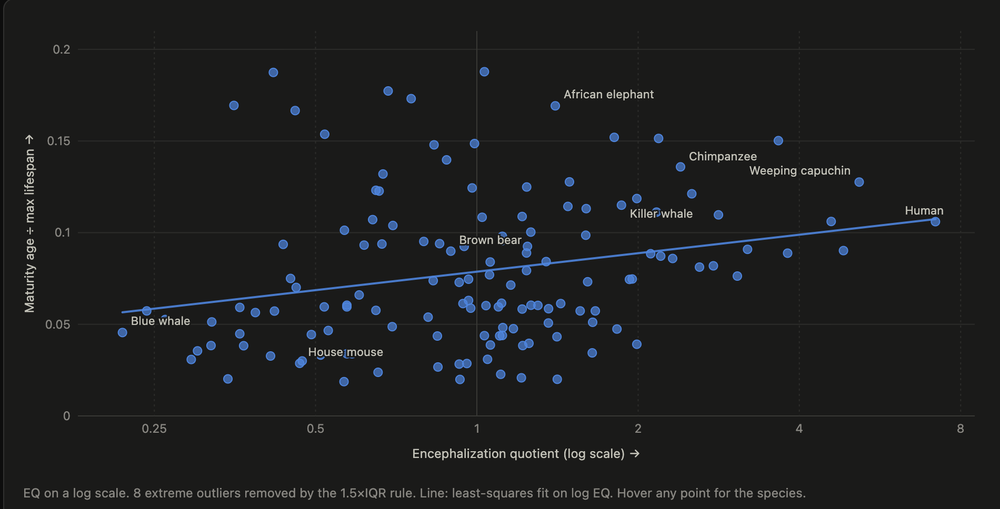
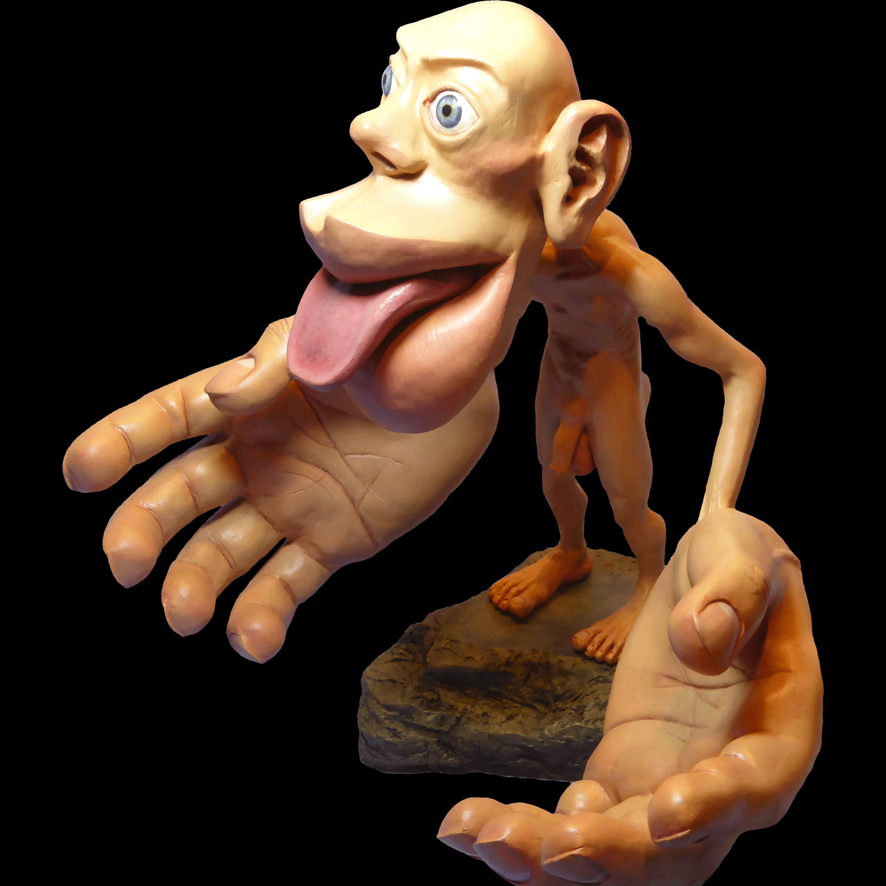
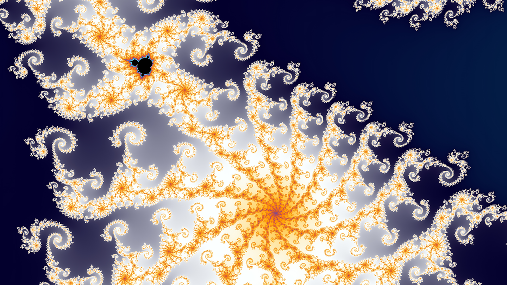

Draft preview · created
Experiential Learning in Embodied Intelligence
With inspiration from biological intelligence

“The most wonderful thing about [children] is their infinite capacity for wonder”— Alison Gopnik
The Bitter Lesson
Last November on the Dwarkesh Patel podcast, Richard Sutton explained the Bitter Lesson, arguing that methods for intelligence leveraging human data are consistently overtaken by those built on a system’s own experience.
Even at scale, approaches that rely primarily on existing data face a fundamental ceiling. Human data is finite, and producing more of it is slow and expensive. More importantly, each additional data sample relies on human aggregation and filtering and is not generated to maximize model learning. In contrast, experiential learning methods generate own data through exploration and search. As a result, its progress is bounded only by compute, which has historically proven to scale far better and thus a much better strategy for intelligence.
In chess, AlphaGo, trained on the games of grandmasters, was beaten by AlphaZero, an experience based method which learned by playing, losing, and winning. In Atari, methods built upon the rules of the game were beaten by experience based methods.
In natural language, LLMs initially improved with the scale of data and model parameters. But now that most internet data has been consumed, research has returned to reinforcement and test-time learning. And this pattern, where experience vastly outperforms data, has repeated itself across image processing, translation, and scientific understanding.
Still, I don't think this is understood, especially in embodied intelligence. In academic labs and industry, much of the hype surrounds methods built on human-derived priors like language or collecting human data through teleoperation, videos, and egocentric capture.
But if the goal is general physical intelligence— not just competence on certain, limited tasks— then these approaches are the exact trap Sutton warns about.
Animals Play
Young animals offer a useful example of experiential learning. They learn from exploration: playing, fighting, moving, falling, and trying new things.
A natural counterpoint against this is that many animals, like horses or giraffes, can walk almost immediately after birth. Indeed, this suggests the opposite of self-exploration: that genes encode a kind of “pre-training.” However, these built-in behaviors are primarily typical of animals with lower encephalization quotient (EQ), or brain to body size. Low EQ animals are ready to act early, but their behavior is less flexible. On the other hand, animals1 with higher EQ like chimpanzees and dogs are the opposite. They are born far more helpless and dependent upon their guardians for longer, but gain the ability to adapt, generalize, and learn from experience.

Though this correlation and not causal evidence, I think it points to an interesting trend in nature: greater behavioral flexibility seems to come with greater dependence on learning from experience.
And importantly, this tradeoff isn’t neutral. Humans, at the extreme end of high EQ, dominate in general intelligence. Human infants are born with very little hardcoded behavior and are vulnerable for years, but with a brain designed to learn rapidly and flexibly.
tl;dr: nature also supports the bitter lesson.
Babies Self-Collect to Learn
The most general learners among young animals are human babies. They are born with little2 control over their bodies, yet they learn to build motor skills, recognize patterns, and predict outcomes.
I want to focus on three aspects of this learning: (1) forming a rich, internal model of the world, (2) self-collection of data, and (3) learning from this continual stream.
Forming an Rich Internal Dynamics Model
From: LeCunn, Schmidhuber, Balastario, Hafner
The big world hypothesis theorizes that because it is highly unlikely that we can model all aspects of the world3, intelligence must build an approximate4 internal model.

This internal model must convert sensory observations— touch, sight, smell, and taste— into physical actions. But raw perception is high-dimensional5, noisy and highly redundant. The sensory homunculus above is a depiction of the human body, where parts are scaled by neuron representation in the brain.
Predicting every detail of future observations, as generative world models attempt to do, is both computationally expensive and unnecessary for planning. Much of that reconstruction may be irrelevant to action, while many aspects of the physical world are difficult or impossible to simulate accurately. A useful internal model should therefore preserve the structure needed to predict the consequences of actions without trying to reproduce the world in full detail.
The solution is to create a function that maps an observation $o_t$ to an intermediate latent state representation $z_t$. Defining a lower dimensional $z_t$ relative to perception forces it to be a compressed function of observations.
$$z_{t}=f(o_{t})$$
Our brains do this all the time. Imagine yourself a coffee shop you frequent. How many chairs are there? Though you've see all of them, you might not know. Like chairs, leaves on a tree, or the color of your friend's shirt, much of perception is abstracted away. Relevant information is contained, while everything else is ignored. Even given the same observation, when goals and intents change, so does the latent information carried. That is to say, latent states are a goal-conditioned form of perception. We can modify the equation above as follows:
$$z_{t}=f\left(o_{t}\left|\right.g_{}\right)$$
From the set of a given system's actions, we can choose an $a_t$ and use $z_t$ to predict the next state $z_{t+1}$. This is our forward dynamics model6:
$$\hat{z}_{t+1}=dyna\left(z_{t,}a_{t}\right)$$
$$\hat{z}_{t+1}\sim p_{\theta}\left(z_{t+1}\mid h_{t+1}\right)$$
Planning is simply the process of rolling out trajectories to imagine different futures. A college student can anticipate the sequence of actions that lead to graduation; an athlete can compare the consequences of eating fast food with cooking a healthy meal. In this way, dynamics models serves not only as representations of the world but also as a tool for planning within it.
To learn this model, we define the loss below, comparing the difference in latent space between our prediction and actual next state:
$$L=\Vert\hat{z}_{t+1}-z_{t+1}\Vert^2$$
$$=\Vert^{}dyna\left(f\left(o_{t}\left|\right.g_{}\right)_{,}a_{t}\right)-f\left(z_{t+1}\left|g_{}\right.\right)\Vert^2$$
But learning a useful dynamics model introduces a fundamental problem: representation collapse. If both the perceptual encoder and dynamics model and trained jointly to minimize prediction error, they can discover a trivial solution. The encoder maps every observation to the same constant $c$, while the dynamics model simply predicts $c$ at every step. Prediction error becomes 0, but the learned representation contains no information about the world.
There are two broad families of solutions to this problem: contrastive and non-contrastive learning.
Contrastive methods uses positive and negative samples to make representations distinguishable, with InfoNCE loss:
$$L=-\log \frac{\exp(\operatorname{sim}(z,z^{+})/\tau)+\sum_i \exp(\operatorname{sim}(z,z_i^{-})/\tau)}{\exp(\operatorname{sim}(z,z^{+})/\tau)}$$
Examples include Barlow Twins and Siamese-style approaches. However, it becomes increasingly difficult to define useful negative as the dimensionality and complexity of the data grows, the curse of dimensionality.
That is why non-contrastive methods are preferred, instead preventing collapse through architectural constraints like exponential moving average (EMA) and stop-grad:
$$\xi \leftarrow \tau \xi + (1 - \tau)\theta$$
or constraining the feature space by using an inverse dynamics model:
$$\hat{a}_{t}=g\big(\phi(s_{t}),\,\phi(s_{t+1})\big)$$
$$\min_{\theta_P,\, \theta_I,\, \theta_F} \Big[ -\lambda\, \mathbb{E}_{\pi(s_t;\theta_P)}\Big[\textstyle\sum_t r_t\Big] + (1-\beta)\, L_I + \beta\, L_F \Big]$$
or regularization:
$$L_{\text{total}} = L_{\text{pred}} + \lambda_{\text{reg}} \cdot R(Z)$$
A recent work LeJEPA uses SIGReg as the regularizer:
$$L_{\mathrm{SIGReg}}=\frac{1}{M}\sum_{m=1}^{M}\sum_{k=1}^{T}\omega_{k}\left(\frac{1}{N}\sum_{i=1}^{N}\cos\left(t_{k}u_{m}^{\top}z_{i}\right)-e^{-t_{k}^{2}/2}\right)^{2}+\left(\frac{1}{N}\sum_{i=1}^{N}\sin\left(t_{k}u_{m}^{\top}z_{i}\right)\right)^{2}$$
This section is not only an argument for dynamics models but one against other approaches based on human priors, the primary one being language. Whether it's a VLA or LLM that reasons in text and invokes motor control, language is a poor intermediate representation.
As a tool for communication not thought, language is inherently compressed and discrete. An LLM produces a rich continuous final hidden state vector, but the nearest token in vector space is selected for each token generation. This decoding from continuous space to a discrete set of tokens is lossy. Though it is acceptable when the objective is communication, it is less obviously desirable when the objective is to preserve everything relevant about geometry, motion, contact, force, uncertainty, or other fine-grained properties of the physical world. This was said well by Q-Labs.
Using language for low-level control introduces a second problem: inefficiency. If an LLM must repeatedly reinterpret the scene, reason in language, and issue another motor command, a large amount of computation is spent reconstructing decisions that a learned dynamical policy could produce directly. As Jitendra Malik has argued, using LLMs for low-level control appears “perversely inefficient and unnecessary.”
This distinction also has a cognitive basis. In Mind in Motion, Barbara Tversky argues that action and spatial experience play a fundamental role in constructing our internal models of the world. Infants can reason about objects, motion, and causality before acquiring language, and even adults routinely experience thoughts that are richer and faster than their verbal descriptions. Language appears to communicate thought rather than constitute all of it.7
Though useful for other purposes like entertainment, 3D reconstruction and segmentation are also similar unnecessary, lossy intermediate representations for physical intelligence, as argued by Jon Barron.
Because of the current momentum in industry around LLMs, language may become the dominant form of representation. The argument remains that language is a lossy, inefficient form of representation. Methods that rely on human priors get beaten by ones that don't, and this will most likely be true for language as well.
Self-Collection of Data Through Exploration
From: Pathak, Aggarwal, Efros, Schmidhuber

Human knowledge can be thought of as a fractal. Its edges mark the frontier of what is known; each discovery pushes that boundary outward.
We ultimately want systems capable of pushing that frontier outward on their own. But to discover beyond what is already known, a system must first learn to direct its own learning. Today, that choice is still largely made by humans. In pre-training, models learn from massive corpus that humans have generated, collected filtered, labeled, and organized.
The first issue is that this data is finite. A recent estimate paper estimates that high-quality internet text could be exhausted within the next couple years (in fact companies are even extracting text from hardcover books). And the same basic constraint applies to internet video for robotics: there is only so much useful human generated experience already available.
The main response has been to collect new data through expert demonstrations and egocentric capture. But this pipeline remains expensive and labor-intensive. In a recent blog post, Skild AI wrote that for every dollar spent collecting data, it spent roughly three dollars on quality control. However, requiring every additional unit of learning to have a proportional amount of human labor is not a scalable strategy.
Most importantly, the model does not choose what it should learn next. In pre-training, its experience comes from a fixed distribution assembled by humans.8 Deployment does a better job through systems like coding agents, autonomous vehicles, or robots that collect data from trajectories induced by their current policy. In either case, the model largely observes what humans provide or what its existing parameters already cause it to encounter. As more samples accumulate from these distributions, their informational value eventually diminishes. What is missing is the ability to actively seek experiences that target the model’s own uncertainty, failures, or gaps in knowledge.
This suggests a hierarchy in how dependent learning is on externally selected experience: (1) finite pre-training data, (2) continuous data generated through deployment, and (3) agents that actively seek the experiences most useful for improving themselves.
The first two will automate important tasks and create enormous economic value. But the third is qualitatively different. Instead of merely learning from whatever data becomes available, the system influences which data becomes available in the first place.
Reinforcement learning gets closer to autonomous data collection. Instead of learning from a static dataset, an agent interacts with an environments and generates its own experience. Yet, most RL today still relies on task-based reward and environment construction. A robot may be told to pick up a cup, open a drawer, or navigate toward a goal. Its experiences are valuable insofar as they help maximize reward for that particular objective. Learning within the task can certainly generalize, but the exploration itself remains confined by the task. Once the objective changes, a new reward has to be specified.
Someone has to define that task, design the reward, construct the environment, and decide what kinds of experiences should matter. The agent may determine how to gather data, but humans are still largely determining what data is worth gathering.
If we want to remove humans from the loop, then allowing an agent to act is not enough. The agent must also learn to decide what is worth experiencing.
Biological intelligence offers a more concrete picture of this process. Infants are intensely captured by certain experiences yet get quickly bored from others.9 They also repeat actions that produce controllable effects: for example, babies will kick more when they learn that kicking moves a mobile above them.
As they grow, this becomes more pronounced. They bang, drop, rotate, mouth, and throw objects, often repeating the same interaction until its consequences become predictable.10 Their exploration is not random: they are pulled toward what is surprising, what is still changing their understanding, and what they can learn to control.
At whatever stage of learning— from a baby to a scientist— intelligence needs signals to determine where to spend time and energy. What are those internal signals that push the boundary of the fractal outward? Below are a few.
Novelty
A 2018 paper from Burda et. al proposes estimating novelty using Random Network Distillation (RND). The idea is surprisingly simple: train a network $f_{\theta}(x)$ to match the output of a randomly initialized, frozen target network $f_{\phi}(s)$. If a new input lies in or around the previous training input distribution, the error between the and target is low. Otherwise, it stays high— that error is your novelty signal.
Here are runs of a one-hidden-layer network mapping $\mathbb{R}^{1} \to \mathbb{R}^{1}$:
In some sense, RND is a cheap surrogate for density estimation in high dimension spaces: the prediction error is a proxy for state rarity, tracking the surprisal $-\log p_{\text{seen}}(x)$.
Learning Progress
We can define learning progress by looking at it first through a formal lens on entropy and epiplexity.
Consider a random variable $X$ on $\{0,1\}^n$. Let
$$\mathrm{P}^\star = \underset{\mathrm{P} \in \mathcal{P}_{T}}{\arg\min} \left\{ |\mathrm{P}| + \mathbb{E}\left[\log \frac{1}{P(X)}\right] \right\}$$
be program that minimizes the time-bounded MDL, with ties broken by the smallest program and expectations taken over $X$. $|\mathrm{P}|$ is the length of program $\mathrm{P}$ in bits, and logarithms are base $2$. The $T$-bounded epiplexity $\mathrm{S}_T$ and entropy $\mathrm{H}_T$ of $X$ are
$$\mathrm{S}_T(X) := |\mathrm{P}^\star|, \quad \text{and} \quad \mathrm{H}_T(X) := \mathbb{E}\left[\log \frac{1}{P^\star(X)}\right].$$
possible to use as a regularizer too: https://the-puzzler.github.io/blog/epijepa/
Compression of progress 11formulated by Schmidhuber:
$$LP(x)=\left|\ell_{\text{slow}}(x)-\ell_{\text{fast}}(x)\right|$$
Learning progress' advantage over naive prediction error is that it differentiates between an amazing advantage over simple prediction error because if error stays high but it was high before, A first order approximation of learning progress is instead
$r_{i}=\langle g_{i},\delta\theta\rangle$
A second method from Graves et al. (2017): take one gradient stepon $x$ and see how much the loss dropped.
Update: $\theta' = \theta - \eta \nabla \mathcal{L}(x)$. Taylor-expand: $\mathcal{L}_{\theta'}(x) \approx \mathcal{L}_{\theta}(x) - \eta \left\lVert \nabla \mathcal{L}(x) \right\rVert^2$. So $\text{LP}(x) = \mathcal{L}_{\theta}(x) - \mathcal{L}_{\theta'}(x) \approx \eta \left\lVert \nabla \mathcal{L}(x) \right\rVert^2$. The gradient norm is therefore a cheap LP proxy. Weakness: measuring on the same sample rewards memorization. Graves's "self prediction gain" fixes this by evaluating on a different sample from the same task.
VIME
Empowerment
$$E(s)=\max p(a_{1:K})I(A_{1:K};S_{K}\mid s)$$
That $\max_p$ has no closed form. The Mohamed & Rezende trick is a variational lower bound using a learned inverse model $q(a_{1:K} \mid s_K, s)$q(a1:K∣sK,s) ("given where you ended up, guess what you did"):
$$I(A;S_K \mid s) \;\ge\; H(A) + \mathbb{E}\big[\log q(A \mid S_K, s)\big]$$
$I(A;S')=\text{inverse direction }H(A)-H(A\mid S')=\text{forward direction }H(S')-H(S'\mid A)$
Power - to have maximum control over the environment
Power is the ability to stay in a reachable state with a large variance/distribution of high EV states. At the same time, it is about making unreachable states reachable.
More in-depth on the three above to come.
Learning Through an Infinite Stream of Data
From: Sutton, Barto
Papers: https://arxiv.org/pdf/2601.19897
An autonomous agent must also be able to learn from them quickly without overwriting what it already knows. This is the classic stability—plasticity issue: a model that changes too easily catastrophically forgets old skills, while one that is too constrained loses the ability to adapt.
Modern reinforcement learning handles this mostly through indirect mechanisms. PPO and GRPO constrain policy updates using clipped objectives, limiting how far the new policy can move from the behavior that generated the data. Replay buffers periodically retrain on old experiences, while newer approaches rely on imagined trajectories generated by a learned world model. These methods improve stability but do not determine which parts of the model should remain stable and which should stay plastic.
A more thorough solution is to manage plasticity at the level of individual parameters or neurons. Parameters that contribute strongly to existing behavior can be assigned smaller effective learning rates, while parameters carrying little useful information can change more freely or even be reset.
IDBD, for example, learns a separate step size for each parameter based on whether successive updates remain useful.
Synaptic intelligence estimates parameter importance from how much each weight contributed to reducing loss over its learning trajectory, then penalizes changes to important weights.
Sutskever, on the Dwarkesh Patel podcast, noted that emotions play a vital role in regulating our reaction, perception, and learning. In some sense, a value function serves as a scalar proxy for emotions: high ones signal positive feelings like happiness whereas lower ones mean not good states. A useful plasticity signal may combine prediction error with expected value, so updates are strongest for experiences that are both unexpected and important, rather than merely surprising.
Other methods periodically recycle inactive or low-utility neurons.
Continual learning should not rely on a single global learning rate or a uniformly constrained network. The agent should continually estimate which parts of itself should change in response to new experiences.
Closing Thoughts
The final stack of embodied intelligence will likely include a combination of the three parts above: a regularized hierarchical dynamics model, intrinsic objectives that drive learning, and an architecture that preserves foundational information while being plastic.
Of these, self-collection of data through exploration seems both the most important and the least emphasized.
Though these ideas are framed in the context of physical intelligence, they should extend to autonomous systems more broadly, including those operating on the internet.
A quote from one of my favorite shows encapsulates the main idea of this essay well:
“Anyone can memorize facts and figures, but to really LEARN something, you’ve got to go out and do it yourself… follow your curiosity!” - the man with the yellow hat
Citations
This piece builds and connects ideas from Agrawal, Barlow, Barto, Efros, Gopnik, LeCun, Malik, McCulloch, Pathak, Schmidhuber, Silver, Sutton and many more cited above and below.
Pigeons, dogs, squirrels, dolphins, pigs, octopus, orangutans.
Interestingly in the Scientist in the Crib, Dr. Gopnik notes that human babies are born not only with instinctual processes such as the beating of the heart, but also surprisingly sophisticated social priors, including the ability to recognize themselves and others as agents.
In one series of experiments, Gopnik’s lab studied whether newborns could imitate human actions. Remarkably, even babies just 42 minutes after birth were able to imitate an adult sticking out their tongue (Gopnik, 30). Somehow, the newborn brain already understood that the moving image in front of it was another human with a body similar to its own. Fascinatingly, this suggests that even human infants, the highest EQ animals, arrive with built-in structure for interpreting the world.
Still, the more interesting trend is that the more intelligent animals rely less on pre-programmed behavior. In the limit, this suggests that the most intelligent systems, though may start with pre-baked knowledge, will acquire most of their knowledge through interaction.
- A perfect simulation of the world is impossible because the simulator is part of the world. It has fewer states than the world, so it can't represent everything exactly, and a perfect model would have to contain itself. More compute doesn't help, because the world grows too: better sensors, smarter agents, and chaotic physics keep it out of reach.
- Simple feed-forward neural networks are powerful function approximators themselves.
Some body parts like the hand and mouth receive relatively more complex, vital information. These require more computation to convert into meaningful representations and thus more neurons in the brain.
It's important to note that dynamics models approximates causation from correlation. If a state, action pair repeatedly results in a particular state, we can make the assumption that one causes the other. Young children do the same, yet mistakenly rely on a small sample size. They often mistake coincidence for cause— making papers fly at Universal Studios by waving a wand or summoning thunder by clapping. I'm guilty of both.
- Latent feedback text models (COCONUT) use continuous latents and in theory are more expressive. Instead of computing a dot product between the final vector and the model's dictionary of tokens, it reuses that vector auto-regressively, only decoding to text at the final step. Decoding once at the end, compared to per-token decoding is less lossy and therefore more expressive. <maybe move to real text>
Because synthetic data is generated by an approximate model of the world (an LLM, dynamics model, or simulator), it cannot, by itself, introduce information absent from that model. At best, training on synthetic data can recover, reorganize, or compress existing knowledge, a form of distillation. However, improving a system’s ability to act in some world ultimately requires interaction with that world, whether the internet or the physical world.
The same limitation applies to simulation. An agent trained entirely within a simulator can, at best, learn the world defined by that simulator. But the real world is infinitely more complex than any simulation we can construct (see footnote 3). If the goal is to build an increasingly accurate model of the world, the agent must eventually interact with the world itself.
- Scientist in the Crib, page 27
Alyosha Efros gives an example: close your eyes and imagine what a set of car keys taste like. Absurd as it may be, you might have an intuition because as babies, we did not merely look at objects— we grabbed, rotated, struck, dropped, and mouthed them. Efros describes this as an important quality for intelligence. This “deep data” can only be extracted by intrinsic rewards that repeatedly probe the world until it becomes familiar.
One of the most intuitive examples of learning progress is a baby's reaction to peek-a-boo. Early on, babies have a weak understanding of occlusion: when your hands cover your face, they do not fully expect it to still be there. Out of sight quite literally means out of mind. Your reappearance is therefore both a surprise and delight, often met with giggles. With repetition, however, babies learn to predict what comes next, and that surprise fades. This helps explain why you and I aren't nearly as amused by peek-a-boo as we once were.